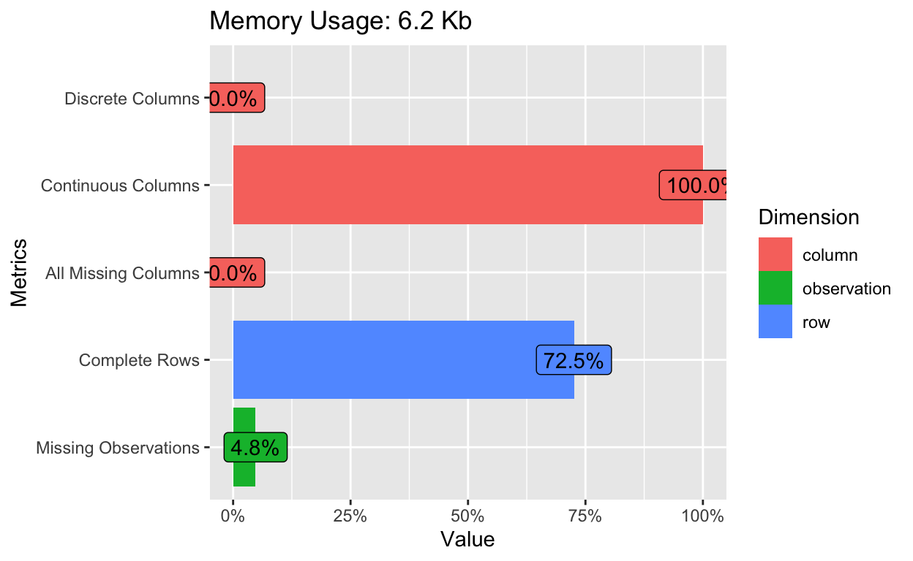
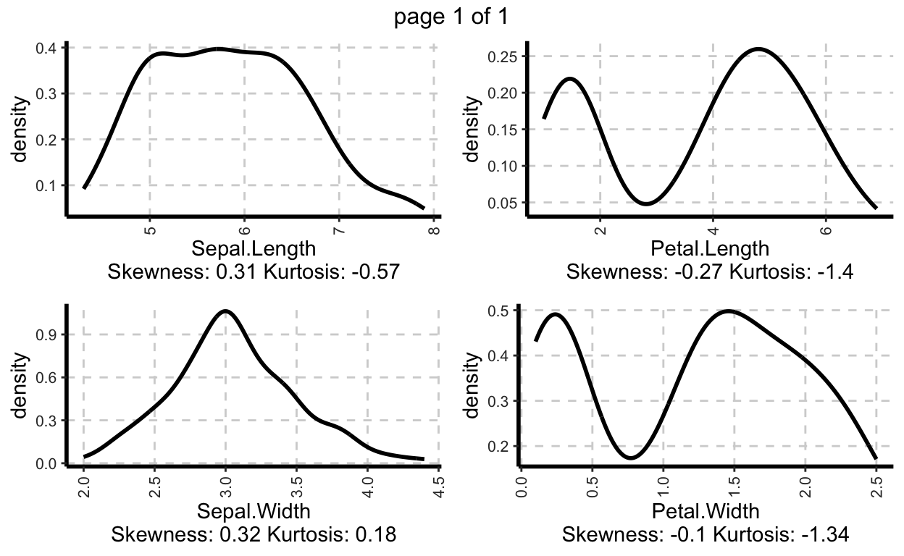
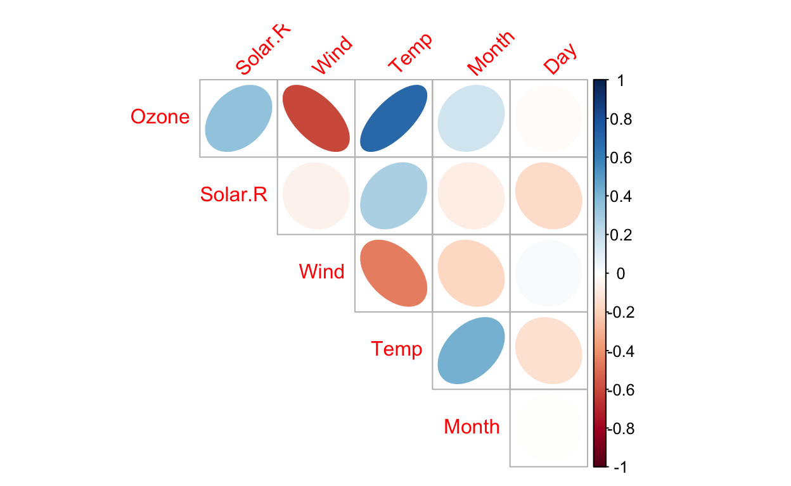
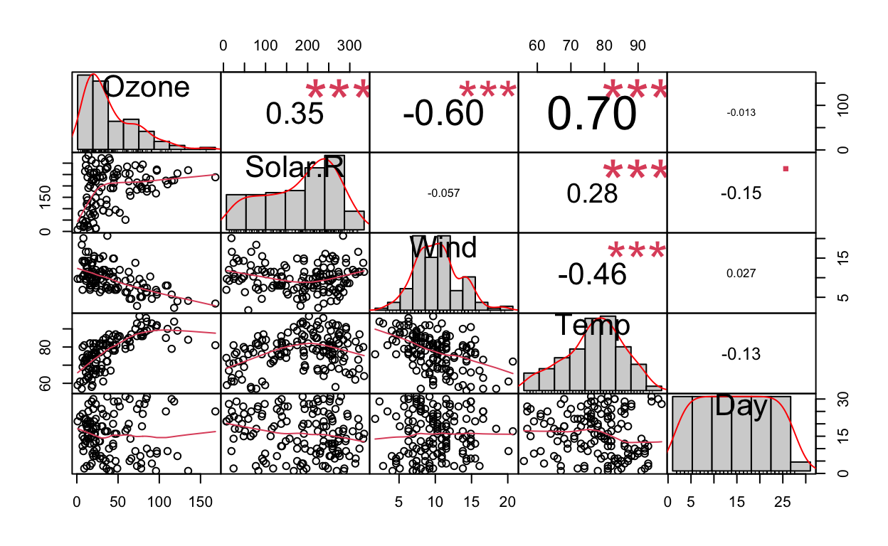
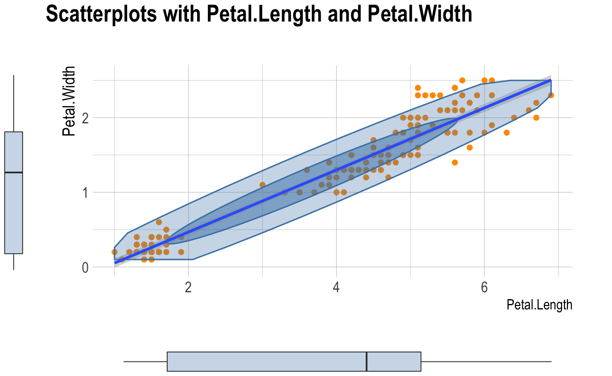
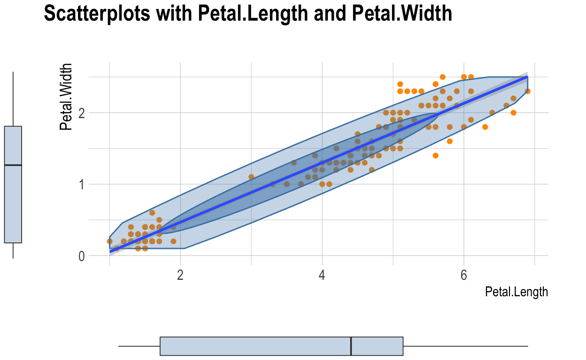
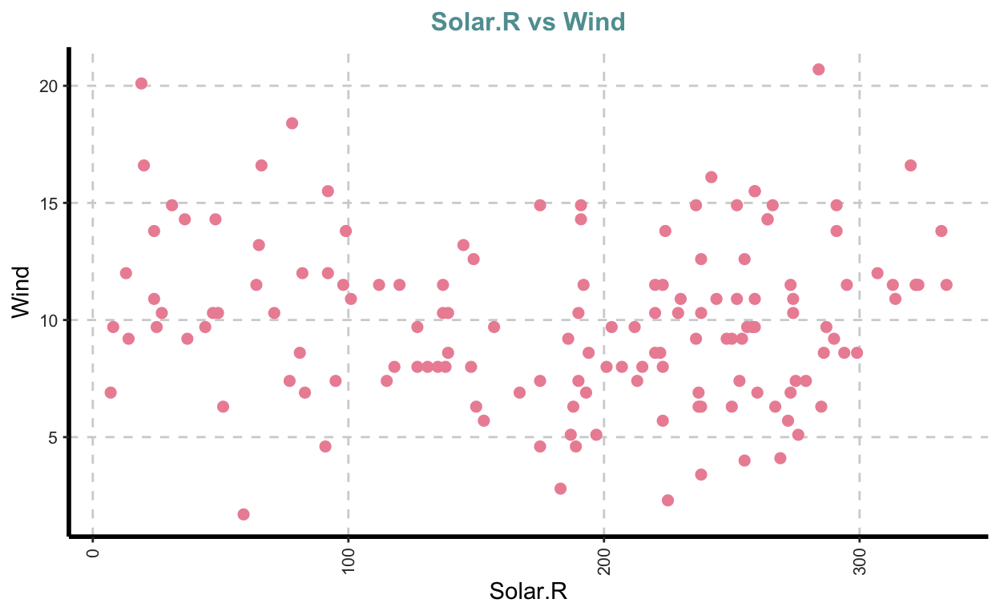
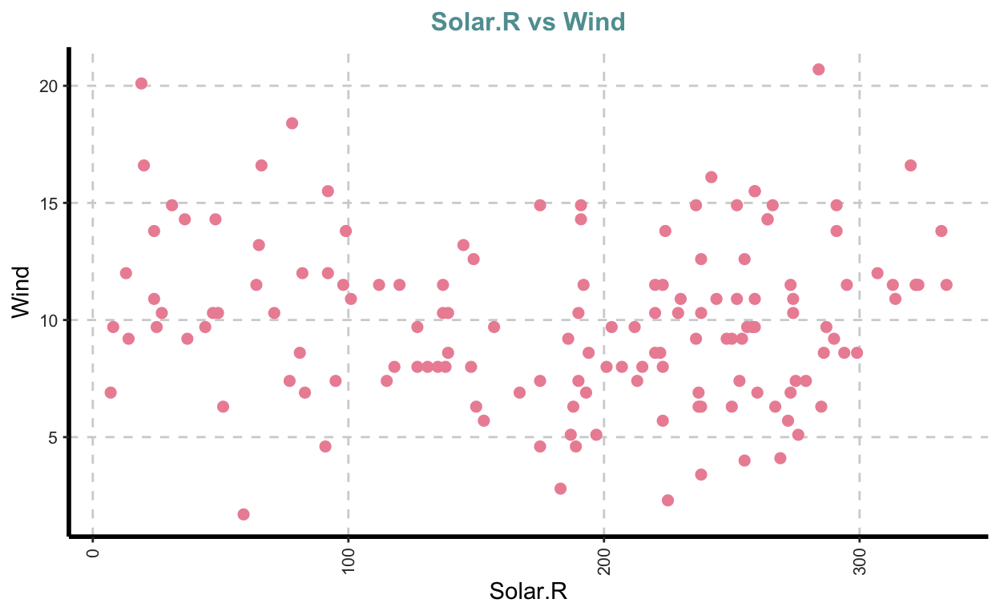

You can run all packages at once, in order to avoid interruptions. You’d need to install some of them if you still aren’t, using install.packages(“name_of_the_package”) command.
library(DataExplorer) # exploratory data analysis
library(tidyverse) # data wrangling and visualization
library(SmartEDA) # exploratory data analysis
library(dlookr) # exploratory data analysis
library(flextable) # beautifying tables
library(funModeling) # some quick statistics
library(skimr) # descriptive stats
library(pastecs) # regularization, decomposition and analysis of space-time series
library(summarytools) # descriptive stats and summaries
library(psych)
library(gtsummary)
library(datasets) # getting the data
library(ISLR) # for data
library(PerformanceAnalytics)
library(ggstatsplot)
library(performance)
library(dlookr)
library(visdat)
library(car)
library(explore)
library(knitr)
library(fastStat)
I love R, because it is reach and generous. Having more than 17000 packages allows me to solve any data science problem. However, such abundance can be overwhelming, especially because one task can be accomplished by different functions from different packages with different levels of effectiveness. So, looking for the most effective way can be very time consuming! Thus, I hope that this collection of functions will save you some time. And if you know better functions or packages for EDA, please let me know in the comments below and let us together create the one-stop solution for EDA in R. If one of the variables is of a particular importance for you, you can specify it and get much richer report. Simply execute the code below and see it for yourself.
Creating visualised reports of the whole dataset with only one function!
The most effective way to explore the data quick is the creation of automated reports. We’ll have a look at three packages which are able to do this. DataExplorer package package creates the best report in my opinion. SmartEDA and dlookr packages are also good choices. Three functions you are going to see in a moment will cover all the basics of EDA in a few seconds.
{DataExplorer}
{DataExplorer} report will deliver basic info about your dataset, like number of rows and columns, number of categorical and numeric variables, number of missing values and number of complete rows. It will also show you a missing data profile, where percentages of missing values in every variable are displayed. It plots the histograms and Quantile-Quantile plots for every numeric variable and bar-plots for every categorical variable. It finally explores the combinations of different variables, by conducting correlation analysis, principal component analysis, box and even scatter plots.
library(DataExplorer) # for exploratory data analysis
library(tidyverse) # for data, data wrangling and visualization
# report without a response variable
create_report(diamonds)
# report with a response variable
create_report(diamonds, y = "price")
{SmartEDA}
In addition to the similar results, {SmartEDA} report also delivers descriptive statistics for every numeric variable with all important metrics you could need, like number of negative values, number of zeros, mean, median, standard deviation, IQR, bunch of different quantiles and even the number of outliers. {SmartEDA} also displays the density of every numeric variables instead of histograms. And while {DataExplorer} package can visualize density too, density plots are not part of the automated {DataExplorer} report.
What I found particularly useful in {SmartEDA} report is that it provides the code responsible for a particular result. For instance, if I don’t need the whole report, but wanna see descriptive stats, I just copy the code, change the name of my dataset instead of generic “data” and get the same table I see in the report without looking for such code in the documentation. It saves time! Moreover, in {SmartEDA} package, you can give your report a name and save it in the directory of your choice.
{dlookr}
One of the most amazing features of {dlookr} package is that {dlookr} perfectly collaborates with {tidyverse} packages, like {dplyr} and {ggplot2}. This elevates the output of {dlookr} on another level. We’ll see some examples here. Another advantage of {dlookr} package is that you can choose the output to be a PDF (by default) or HTML files. Moreover, it also separates between three kinds of reports: diagnose report, EDA report and transformation report.
The diagnose report delivers:
- the number of missing and unique values,
- counts, proportions and ranks of categorical variables,
- descriptive stats, number of zeros, negative values and number of outliers of numeric variables and finally
- visualizes every numeric variables with and without outliers
library(dlookr) # for exploratory data analysis
# report without a response variable
diagnose_report(diamonds) # pdf by default
Similarly to the {DataExplorer} report, we can get much richer EDA report from {dlookr} by specifying the target variable. Let’s export this report in the HTML format. This EDA report delivers:
- visual normality tests of all numerical variables with a histogram and a Quantile-Quantile plot plus two histograms of the most common transformations of data, namely log- and square-root. This is quite useful, because we can immediately see whether we need to transform the data and which type of transformation is more useful;
- this report also provides correlation coefficients and plots for all possible combinations of numeric variable, then
- since our target variable is categorical, EDA report provides descriptive statistics for every category of our target variable vs. every numeric variable, and contingency tables for with categorical variables;
- it also visualizes the distribution of every other variable vs. the target variables using box-plots and density plots, with and without outliers.
# report with a response variable and some dplyr sintax
diamonds %>%
eda_report(
target = cut,
output_format = "html",
output_file = "EDA_diamonds.html")
Finally the transformation report, which is my absolute favorite:
- imputes missing values with multiple methods simultaneously, so that you can compare the distribution of the data after different imputation techniques and choose the best imputation method for every particular dataset,
- imputes outliers, also with different methods,
- resolve skewness of the data with different methods and even
- is able to categorize numeric variables, if needed.
# example with missing values
transformation_report(airquality, target = Temp)
# example with outliers
transformation_report(diamonds, target = price)
Big Picture of your data and some quick
Big reports might be overwhelming though, and we often need only a particular aspect of data exploration. Fortunately, you can get any part of the big report separately. For instance, the basic description for airquality dataset can be reached via functions introduce() and plot_intro() from {DataExplorer} package.
{DataExplorer}
[,1]
rows 153
columns 6
discrete_columns 0
continuous_columns 6
all_missing_columns 0
total_missing_values 44
complete_rows 111
total_observations 918
memory_usage 6376plot_intro(airquality)

{funModeling}
{funModeling} package provides a similar function with some useful metrics, like number of zeros, NAs or unique values for every variable.
library(funModeling)
status(airquality) %>% flextable()
variable | q_zeros | p_zeros | q_na | p_na | q_inf | p_inf | type | unique |
Ozone | 0 | 0 | 37 | 0.242 | 0 | 0 | integer | 67 |
Solar.R | 0 | 0 | 7 | 0.046 | 0 | 0 | integer | 117 |
Wind | 0 | 0 | 0 | 0.000 | 0 | 0 | numeric | 31 |
Temp | 0 | 0 | 0 | 0.000 | 0 | 0 | integer | 40 |
Month | 0 | 0 | 0 | 0.000 | 0 | 0 | integer | 5 |
Day | 0 | 0 | 0 | 0.000 | 0 | 0 | integer | 31 |
Explore categorical (discrete) variables
{DataExplorer}
Simple bar plots with frequency distribution of all numeric variables are already quite useful, because they provide a quick overview about the meaningfulness of the categorization, and whether there are some typing mistakes in the data. However, plotting a target discrete variable by another discrete variable is even more useful. It is some sort of a visual contingency table (see the second plot below).


{SmartEDA}
ExpCatViz from {SmartEDA} package also plots each categorical variable with a bar plot, but displays percents instead of counts.


And here we finally come to the DEEP part of EDA. The plot below nearly “scrims” the hypothesis that education level is strongly associated with the job. Namely, the more educated we get, the more likely we’ll end up working with information (e.g. with data ;) and the less likely we’ll end up working in a factory. However, without a proper statistical test and a p-value this hypothesis can not be tested and remain, well … a speculation.
## Stacked bar graph
library(ISLR) # for the Wage dataset
ExpCatViz(
Wage %>%
select(education, jobclass),
target="education")
[[1]]
{ggstatsplot}
Fortunately, the {ggstatsplot} package does all the above in one line of code and goes one step further. Namely:
- it counts and calculates percentages for every category,
- it visualizes the “frequency table” in the form of stacked bar plots and
- provides numerous statistical details (including p-value) in addition to visualization, which allows us to make a conclusion or inference already in the exploratory phase of the project!
library(ggstatsplot)
ggbarstats(
data = Wage,
x = jobclass,
y = education,
label = "both")

Descriptive stats
{dlookr}
Descriptive statistics is usually needed for either a whole numeric variable, or for a numeric variable separated in groups of some categorical variable, like control & treatment. Three functions from {dlookr} package, namely describe(), univar_numeric() and diagnose_numeric() do totally nail it. Be careful with the describe() function though, because it also exists in {Hmisc} and {psych} packages too. Thus, in order to avoid the confusion, simply write dlookr:: in front of describe(). Here, we can see how useful can be the collaboration of {dlookr} with {tidyverse} packages, like {dplyr} and its group_by() function! {dlookr} provides the most common descriptive stats, like N, NAs, mean, sd, se_mean, IQR, skewness, kurtosis and 17 quantiles.
variable | n | na | mean | sd | se_mean | IQR | skewness | kurtosis | p00 | p01 | p05 | p10 | p20 | p25 | p30 | p40 | p50 | p60 | p70 | p75 | p80 | p90 | p95 | p99 | p100 |
Sepal.Length | 150 | 0 | 5.8 | 0.83 | 0.068 | 1.3 | 0.31 | -0.55 | 4.3 | 4.4 | 4.6 | 4.8 | 5.0 | 5.1 | 5.3 | 5.6 | 5.8 | 6.1 | 6.3 | 6.4 | 6.5 | 6.9 | 7.3 | 7.7 | 7.9 |
Sepal.Width | 150 | 0 | 3.1 | 0.44 | 0.036 | 0.5 | 0.32 | 0.23 | 2.0 | 2.2 | 2.3 | 2.5 | 2.7 | 2.8 | 2.8 | 3.0 | 3.0 | 3.1 | 3.2 | 3.3 | 3.4 | 3.6 | 3.8 | 4.2 | 4.4 |
Petal.Length | 150 | 0 | 3.8 | 1.77 | 0.144 | 3.5 | -0.27 | -1.40 | 1.0 | 1.1 | 1.3 | 1.4 | 1.5 | 1.6 | 1.7 | 3.9 | 4.3 | 4.6 | 5.0 | 5.1 | 5.3 | 5.8 | 6.1 | 6.7 | 6.9 |
Petal.Width | 150 | 0 | 1.2 | 0.76 | 0.062 | 1.5 | -0.10 | -1.34 | 0.1 | 0.1 | 0.2 | 0.2 | 0.2 | 0.3 | 0.4 | 1.2 | 1.3 | 1.5 | 1.8 | 1.8 | 1.9 | 2.2 | 2.3 | 2.5 | 2.5 |
If you don’t need such a monstrous table, but only want to have the median() instead of all those quantiles, use univar_numeric() function.
iris %>%
group_by(Species) %>%
univar_numeric() %>%
knitr::kable()
|
diagnose_numeric() function reports the usual 5-number-summary (which is actually a box-plot in a table form) and the number of zeros, negative values and outliers.
iris %>%
diagnose_numeric() %>%
flextable()
variables | min | Q1 | mean | median | Q3 | max | zero | minus | outlier |
Sepal.Length | 4.3 | 5.1 | 5.8 | 5.8 | 6.4 | 7.9 | 0 | 0 | 0 |
Sepal.Width | 2.0 | 2.8 | 3.1 | 3.0 | 3.3 | 4.4 | 0 | 0 | 4 |
Petal.Length | 1.0 | 1.6 | 3.8 | 4.3 | 5.1 | 6.9 | 0 | 0 | 0 |
Petal.Width | 0.1 | 0.3 | 1.2 | 1.3 | 1.8 | 2.5 | 0 | 0 | 0 |
{SmartEDA}
{SmartEDA} with its ExpNumStat() function provides richest and most comprehensive descriptive statistics table. Moreover we can choose to describe the whole variables, grouped variables, or even both at the same time. If we call the argument “by =” with a big letter A, we’ll get statistics for every numeric variable in the dataset. The big G delivers descriptive stats per GROUP, but we’ll need to specify a group in the next argument “gr =”. Using GA, as shown below, would give you both. We can specify the quantiles we need and identify the lower hinge, upper hinge and number of outliers.
ExpNumStat(iris, by="GA", gp="Species", Outlier=TRUE, Qnt = c(.25, .75), round = 2) %>% flextable()
Vname | Group | TN | nNeg | nZero | nPos | NegInf | PosInf | NA_Value | Per_of_Missing | sum | min | max | mean | median | SD | CV | IQR | Skewness | Kurtosis | 25% | 75% | LB.25% | UB.75% | nOutliers |
Petal.Length | Species:All | 150 | 0 | 0 | 150 | 0 | 0 | 0 | 0 | 564 | 1.0 | 6.9 | 3.76 | 4.3 | 1.77 | 0.47 | 3.50 | -0.27 | -1.40 | 1.6 | 5.1 | -3.65 | 10.35 | 0 |
Petal.Length | Species:setosa | 50 | 0 | 0 | 50 | 0 | 0 | 0 | 0 | 73 | 1.0 | 1.9 | 1.46 | 1.5 | 0.17 | 0.12 | 0.18 | 0.10 | 0.80 | 1.4 | 1.6 | 1.14 | 1.84 | 4 |
Petal.Length | Species:versicolor | 50 | 0 | 0 | 50 | 0 | 0 | 0 | 0 | 213 | 3.0 | 5.1 | 4.26 | 4.3 | 0.47 | 0.11 | 0.60 | -0.59 | -0.07 | 4.0 | 4.6 | 3.10 | 5.50 | 1 |
Petal.Length | Species:virginica | 50 | 0 | 0 | 50 | 0 | 0 | 0 | 0 | 278 | 4.5 | 6.9 | 5.55 | 5.5 | 0.55 | 0.10 | 0.78 | 0.53 | -0.26 | 5.1 | 5.9 | 3.94 | 7.04 | 0 |
Petal.Width | Species:All | 150 | 0 | 0 | 150 | 0 | 0 | 0 | 0 | 180 | 0.1 | 2.5 | 1.20 | 1.3 | 0.76 | 0.64 | 1.50 | -0.10 | -1.34 | 0.3 | 1.8 | -1.95 | 4.05 | 0 |
Petal.Width | Species:setosa | 50 | 0 | 0 | 50 | 0 | 0 | 0 | 0 | 12 | 0.1 | 0.6 | 0.25 | 0.2 | 0.11 | 0.43 | 0.10 | 1.22 | 1.43 | 0.2 | 0.3 | 0.05 | 0.45 | 2 |
Petal.Width | Species:versicolor | 50 | 0 | 0 | 50 | 0 | 0 | 0 | 0 | 66 | 1.0 | 1.8 | 1.33 | 1.3 | 0.20 | 0.15 | 0.30 | -0.03 | -0.49 | 1.2 | 1.5 | 0.75 | 1.95 | 0 |
Petal.Width | Species:virginica | 50 | 0 | 0 | 50 | 0 | 0 | 0 | 0 | 101 | 1.4 | 2.5 | 2.03 | 2.0 | 0.27 | 0.14 | 0.50 | -0.13 | -0.66 | 1.8 | 2.3 | 1.05 | 3.05 | 0 |
Sepal.Length | Species:All | 150 | 0 | 0 | 150 | 0 | 0 | 0 | 0 | 876 | 4.3 | 7.9 | 5.84 | 5.8 | 0.83 | 0.14 | 1.30 | 0.31 | -0.57 | 5.1 | 6.4 | 3.15 | 8.35 | 0 |
Sepal.Length | Species:setosa | 50 | 0 | 0 | 50 | 0 | 0 | 0 | 0 | 250 | 4.3 | 5.8 | 5.01 | 5.0 | 0.35 | 0.07 | 0.40 | 0.12 | -0.35 | 4.8 | 5.2 | 4.20 | 5.80 | 0 |
Sepal.Length | Species:versicolor | 50 | 0 | 0 | 50 | 0 | 0 | 0 | 0 | 297 | 4.9 | 7.0 | 5.94 | 5.9 | 0.52 | 0.09 | 0.70 | 0.10 | -0.60 | 5.6 | 6.3 | 4.55 | 7.35 | 0 |
Sepal.Length | Species:virginica | 50 | 0 | 0 | 50 | 0 | 0 | 0 | 0 | 329 | 4.9 | 7.9 | 6.59 | 6.5 | 0.64 | 0.10 | 0.67 | 0.11 | -0.09 | 6.2 | 6.9 | 5.21 | 7.91 | 1 |
Sepal.Width | Species:All | 150 | 0 | 0 | 150 | 0 | 0 | 0 | 0 | 459 | 2.0 | 4.4 | 3.06 | 3.0 | 0.44 | 0.14 | 0.50 | 0.32 | 0.18 | 2.8 | 3.3 | 2.05 | 4.05 | 4 |
Sepal.Width | Species:setosa | 50 | 0 | 0 | 50 | 0 | 0 | 0 | 0 | 171 | 2.3 | 4.4 | 3.43 | 3.4 | 0.38 | 0.11 | 0.48 | 0.04 | 0.74 | 3.2 | 3.7 | 2.49 | 4.39 | 2 |
Sepal.Width | Species:versicolor | 50 | 0 | 0 | 50 | 0 | 0 | 0 | 0 | 138 | 2.0 | 3.4 | 2.77 | 2.8 | 0.31 | 0.11 | 0.48 | -0.35 | -0.45 | 2.5 | 3.0 | 1.81 | 3.71 | 0 |
Sepal.Width | Species:virginica | 50 | 0 | 0 | 50 | 0 | 0 | 0 | 0 | 149 | 2.2 | 3.8 | 2.97 | 3.0 | 0.32 | 0.11 | 0.38 | 0.35 | 0.52 | 2.8 | 3.2 | 2.24 | 3.74 | 3 |
{summarytools} and {psych}
{summarytools} and {psych} packages also provide useful tables with descriptive stats, but since they do not offer anything dramatically new compared to functions presented above, I’ll just provide the code but would not display the results. By the way, summarytools sounds like a good topic for the next chapter…
library(summarytools)
iris %>%
group_by(Species) %>%
descr()
library(psych)
describeBy(iris,
iris$Species)
Summary tools
This topic can be singled out because the functions presented below give you a quick overview about the whole dataset, and some of them also do test hypothesis.
{summarytools}
For instance, dfSummary() function from {summarytools} package provides some basic descriptive stats for numeric and counts with proportions for categorical variables. It even tries to somehow plot the distribution of both, but I found it very weird and not too useful. What is useful though, is that dfSummary() provides a number of duplicates and missing values.
dfSummary(diamonds)
Data Frame Summary
diamonds
Dimensions: 53940 x 10
Duplicates: 146
-----------------------------------------------------------------------------------------------------------------------------
No Variable Stats / Values Freqs (% of Valid) Graph Valid Missing
---- ------------------- ------------------------------ ----------------------- ------------------------ ---------- ---------
1 carat Mean (sd) : 0.8 (0.5) 273 distinct values : 53940 0
[numeric] min < med < max: : . (100.0%) (0.0%)
0.2 < 0.7 < 5 : :
IQR (CV) : 0.6 (0.6) : : .
: : : .
2 cut 1. Fair 1610 ( 3.0%) 53940 0
[ordered, factor] 2. Good 4906 ( 9.1%) I (100.0%) (0.0%)
3. Very Good 12082 (22.4%) IIII
4. Premium 13791 (25.6%) IIIII
5. Ideal 21551 (40.0%) IIIIIII
3 color 1. D 6775 (12.6%) II 53940 0
[ordered, factor] 2. E 9797 (18.2%) III (100.0%) (0.0%)
3. F 9542 (17.7%) III
4. G 11292 (20.9%) IIII
5. H 8304 (15.4%) III
6. I 5422 (10.1%) II
7. J 2808 ( 5.2%) I
4 clarity 1. I1 741 ( 1.4%) 53940 0
[ordered, factor] 2. SI2 9194 (17.0%) III (100.0%) (0.0%)
3. SI1 13065 (24.2%) IIII
4. VS2 12258 (22.7%) IIII
5. VS1 8171 (15.1%) III
6. VVS2 5066 ( 9.4%) I
7. VVS1 3655 ( 6.8%) I
8. IF 1790 ( 3.3%)
5 depth Mean (sd) : 61.7 (1.4) 184 distinct values : 53940 0
[numeric] min < med < max: : (100.0%) (0.0%)
43 < 61.8 < 79 :
IQR (CV) : 1.5 (0) . :
: :
6 table Mean (sd) : 57.5 (2.2) 127 distinct values : 53940 0
[numeric] min < med < max: : (100.0%) (0.0%)
43 < 57 < 95 :
IQR (CV) : 3 (0) : :
: :
7 price Mean (sd) : 3932.8 (3989.4) 11602 distinct values : 53940 0
[integer] min < med < max: : (100.0%) (0.0%)
326 < 2401 < 18823 :
IQR (CV) : 4374.2 (1) : : .
: : : : . . .
8 x Mean (sd) : 5.7 (1.1) 554 distinct values : 53940 0
[numeric] min < med < max: : . (100.0%) (0.0%)
0 < 5.7 < 10.7 : : :
IQR (CV) : 1.8 (0.2) : : :
. : : : :
9 y Mean (sd) : 5.7 (1.1) 552 distinct values : 53940 0
[numeric] min < med < max: : : (100.0%) (0.0%)
0 < 5.7 < 58.9 : :
IQR (CV) : 1.8 (0.2) : :
: :
10 z Mean (sd) : 3.5 (0.7) 375 distinct values : 53940 0
[numeric] min < med < max: : (100.0%) (0.0%)
0 < 3.5 < 31.8 : :
IQR (CV) : 1.1 (0.2) : :
: :
-----------------------------------------------------------------------------------------------------------------------------{skimr}
{skimr} is another useful package which provides both some basic descriptive stats of numeric variables, and counts for categorical variables. Besides, it is also able to use {dplyr’s} group_by() function (not shown).
| Name | diamonds |
| Number of rows | 53940 |
| Number of columns | 10 |
| _______________________ | |
| Column type frequency: | |
| factor | 3 |
| numeric | 7 |
| ________________________ | |
| Group variables | None |
Variable type: factor
| skim_variable | n_missing | complete_rate | ordered | n_unique | top_counts |
|---|---|---|---|---|---|
| cut | 0 | 1 | TRUE | 5 | Ide: 21551, Pre: 13791, Ver: 12082, Goo: 4906 |
| color | 0 | 1 | TRUE | 7 | G: 11292, E: 9797, F: 9542, H: 8304 |
| clarity | 0 | 1 | TRUE | 8 | SI1: 13065, VS2: 12258, SI2: 9194, VS1: 8171 |
Variable type: numeric
| skim_variable | n_missing | complete_rate | mean | sd | p0 | p25 | p50 | p75 | p100 | hist |
|---|---|---|---|---|---|---|---|---|---|---|
| carat | 0 | 1 | 0.80 | 0.47 | 0.2 | 0.40 | 0.70 | 1.04 | 5.01 | ▇▂▁▁▁ |
| depth | 0 | 1 | 61.75 | 1.43 | 43.0 | 61.00 | 61.80 | 62.50 | 79.00 | ▁▁▇▁▁ |
| table | 0 | 1 | 57.46 | 2.23 | 43.0 | 56.00 | 57.00 | 59.00 | 95.00 | ▁▇▁▁▁ |
| price | 0 | 1 | 3932.80 | 3989.44 | 326.0 | 950.00 | 2401.00 | 5324.25 | 18823.00 | ▇▂▁▁▁ |
| x | 0 | 1 | 5.73 | 1.12 | 0.0 | 4.71 | 5.70 | 6.54 | 10.74 | ▁▁▇▃▁ |
| y | 0 | 1 | 5.73 | 1.14 | 0.0 | 4.72 | 5.71 | 6.54 | 58.90 | ▇▁▁▁▁ |
| z | 0 | 1 | 3.54 | 0.71 | 0.0 | 2.91 | 3.53 | 4.04 | 31.80 | ▇▁▁▁▁ |
{gtsummary}
First of all, tbl_summary() function from {gtsummary} package summarizes all the data in the dataset by a n (%) for categorical and Median (IQR) for numeric variables. The argument “by =” inside of tbl_summary() suppose to contain a grouped categorical variable. The add_p() function then conducts statistical tests with all variables and provides p-values. For numeric variables it uses the non-parametric Wilcoxon rank sum test for comparing two groups and the non-parametric Kruskal-Wallis rank sum test for more then two groups. Categorical variables are checked with a Pearson’s Chi-squared test in case enough data is provides and with a Fisher’s exact test, if number of observations per group is below 5.
library(gtsummary)
mtcars %>%
select(mpg, hp, am, gear, cyl) %>%
tbl_summary(by = am) %>%
add_p()
| Characteristic | 0, N = 191 | 1, N = 131 | p-value2 |
|---|---|---|---|
| mpg | 17.3 (14.9, 19.2) | 22.8 (21.0, 30.4) | 0.002 |
| hp | 175 (116, 192) | 109 (66, 113) | 0.046 |
| gear | <0.001 | ||
| 3 | 15 (79%) | 0 (0%) | |
| 4 | 4 (21%) | 8 (62%) | |
| 5 | 0 (0%) | 5 (38%) | |
| cyl | 0.009 | ||
| 4 | 3 (16%) | 8 (62%) | |
| 6 | 4 (21%) | 3 (23%) | |
| 8 | 12 (63%) | 2 (15%) | |
|
1
Median (IQR); n (%)
2
Wilcoxon rank sum test; Fisher's exact test
|
|||
Wage %>%
select(age, wage, education, jobclass) %>%
tbl_summary(by = education) %>%
add_p()
| Characteristic | 1. < HS Grad, N = 2681 | 2. HS Grad, N = 9711 | 3. Some College, N = 6501 | 4. College Grad, N = 6851 | 5. Advanced Degree, N = 4261 | p-value2 |
|---|---|---|---|---|---|---|
| age | 42 (33, 50) | 42 (33, 50) | 40 (32, 49) | 43 (34, 51) | 44 (38, 53) | <0.001 |
| wage | 81 (70, 97) | 94 (78, 110) | 105 (89, 121) | 119 (100, 143) | 142 (117, 171) | <0.001 |
| jobclass | <0.001 | |||||
| 1. Industrial | 190 (71%) | 636 (65%) | 342 (53%) | 274 (40%) | 102 (24%) | |
| 2. Information | 78 (29%) | 335 (35%) | 308 (47%) | 411 (60%) | 324 (76%) | |
|
1
Median (IQR); n (%)
2
Kruskal-Wallis rank sum test; Pearson's Chi-squared test
|
||||||
Explore distribution of numeric variables
{DataExplorer} provides very intuitive functions for getting histogram and density plots of all continuous variables, plot_histogram() and plot_density(). {funModeling} package provides plot_num() function which also plots the histograms, and {SmartEDA} with its ExpNumViz() function provides nice looking density plots with Skewness and Kurtosis.
{DataExplorer}

funModeling
plot_num(iris)

{SmartEDA}

Check the normality of distribution
{DataExplorer} also provides a simple and elegant solution for checking normality. plot_qq() function produces Quantile-Quantile plots either for all continuous variables in the dataset or even for every group of a categorical variable.
{DataExplorer}


{ggpubr}

{car}
car::qqPlot(iris$Sepal.Length, groups = iris$Species)

{dlookr}
Shapiro-Wilk normality test is performed.
normality(iris)
# A tibble: 4 x 4
vars statistic p_value sample
<chr> <dbl> <dbl> <dbl>
1 Sepal.Length 0.976 1.02e- 2 150
2 Sepal.Width 0.985 1.01e- 1 150
3 Petal.Length 0.876 7.41e-10 150
4 Petal.Width 0.902 1.68e- 8 150plot_normality(airquality, Ozone, Wind)


iris %>%
group_by(Species) %>%
plot_normality(Petal.Length)


Visualize correlation
{DataExplorer}
## View overall correlation heatmap
plot_correlation(na.omit(airquality), type = "c")

{dlookr}
correlate(airquality, Ozone)
# A tibble: 5 x 3
var1 var2 coef_corr
<fct> <fct> <dbl>
1 Ozone Solar.R 0.348
2 Ozone Wind -0.602
3 Ozone Temp 0.698
4 Ozone Month 0.165
5 Ozone Day -0.0132plot_correlate(airquality, method = "kendall")

diamonds %>%
filter(cut %in% c("Premium", "Ideal")) %>%
group_by(cut) %>%
plot_correlate()


ggstatsplot
library(ggstatsplot)
ggcorrmat(airquality)

parameter1 | parameter2 | estimate | conf.level | conf.low | conf.high | statistic | p.value | method | n.obs |
Ozone | Solar.R | 0.34819 | 0.95 | 0.168 | 0.5062 | 148,561 | 2.0e-03 | Spearman correlation | 111 |
Ozone | Wind | -0.59016 | 0.95 | -0.700 | -0.4527 | 413,647 | 4.4e-11 | Spearman correlation | 116 |
Ozone | Temp | 0.77404 | 0.95 | 0.686 | 0.8397 | 58,778 | 3.4e-23 | Spearman correlation | 116 |
Ozone | Month | 0.13786 | 0.95 | -0.051 | 0.3172 | 224,268 | 7.4e-01 | Spearman correlation | 116 |
Ozone | Day | -0.05620 | 0.95 | -0.241 | 0.1328 | 274,749 | 1.0e+00 | Spearman correlation | 116 |
Solar.R | Wind | -0.00098 | 0.95 | -0.168 | 0.1662 | 519,172 | 1.0e+00 | Spearman correlation | 146 |
Solar.R | Temp | 0.20743 | 0.95 | 0.042 | 0.3620 | 411,080 | 1.2e-01 | Spearman correlation | 146 |
Solar.R | Month | -0.12782 | 0.95 | -0.289 | 0.0402 | 584,962 | 7.4e-01 | Spearman correlation | 146 |
Solar.R | Day | -0.15231 | 0.95 | -0.312 | 0.0152 | 597,662 | 4.7e-01 | Spearman correlation | 146 |
Wind | Temp | -0.44654 | 0.95 | -0.568 | -0.3055 | 863,446 | 9.4e-08 | Spearman correlation | 153 |
Wind | Month | -0.15785 | 0.95 | -0.313 | 0.0056 | 691,125 | 4.6e-01 | Spearman correlation | 153 |
Wind | Day | 0.03757 | 0.95 | -0.126 | 0.1996 | 574,479 | 1.0e+00 | Spearman correlation | 153 |
Temp | Month | 0.37208 | 0.95 | 0.222 | 0.5047 | 374,811 | 2.6e-05 | Spearman correlation | 153 |
Temp | Day | -0.15707 | 0.95 | -0.312 | 0.0064 | 690,659 | 4.6e-01 | Spearman correlation | 153 |
Month | Day | -0.00785 | 0.95 | -0.171 | 0.1556 | 601,591 | 1.0e+00 | Spearman correlation | 153 |
PerformanceAnalytics
Correlation coeffitients and correlation color are amazing, they give us an idea about where there is a potentias for further exploration. However, they are quite limited though. Firstly, we don’t really know whether these correlations are significant, so there are no tests behind it. Secondly, we don’t even know what correlation method produced these coeffitients in the first place, was it the Pearson correaltion, or Spearman. Finally we don’t see how data are scattered, so that some relationships might be very non-linear and correlation analysis would be not appropriate at all. The solution for all three problems is provided by the PerformanceAnalytics package, which offers a chart.Correlation() function. It produces histograms for every particular numeric variable and the scatterplots for every combination of numeric variables. I found the significance stars particularly helpful. Besides, we can easily choose the method we measure the correlation by, for instance, in the example below we use a robust non-parametric kendall correlation which is more appropriate for non-normally and non-too-linearly distributed values with some outliers. If we do not specify the methos, we’ll produce a parametric (usual) Pearson correlation which is only appropriate for perfect data, which … rarely happens.
PerformanceAnalytics::chart.Correlation(airquality %>% select(-Month), method = "kendall")

Visualize box plots
{DataExplorer}
## View bivariate continuous distribution based on `cut`
plot_boxplot(airquality, by = "Month")

{SmartEDA}


ggstatsplot
ggbetweenstats(
data = iris,
x = Species,
y = Sepal.Width,
type = "np")

## I did 3 videos about these fancy box plots with statistics
Visualize outlier
The performance package provide an easy way to visualize outliers.
check_outliers(airquality$Ozone)
Warning: 15 outliers detected (cases 30, 62, 69, 70, 71, 86, 99, 100, 101, 117, 121, 122, 123, 124, 127).plot(check_outliers(airquality$Ozone, method = "iqr"))

{dlookr}
diagnose_outlier(airquality)
variables outliers_cnt outliers_ratio outliers_mean with_mean
1 Ozone 2 1.307190 151.50000 42.129310
2 Solar.R 0 0.000000 NaN 185.931507
3 Wind 3 1.960784 19.73333 9.957516
4 Temp 0 0.000000 NaN 77.882353
5 Month 0 0.000000 NaN 6.993464
6 Day 0 0.000000 NaN 15.803922
without_mean
1 40.210526
2 185.931507
3 9.762000
4 77.882353
5 6.993464
6 15.803922plot_outlier(airquality, Ozone)

airquality %>%
dplyr::select(Ozone, Wind) %>%
plot_outlier()


# Visualize variables with a ratio of outliers greater than 3%
diamonds %>%
plot_outlier(diamonds %>%
diagnose_outlier() %>%
filter(outliers_ratio > 3) %>%
select(variables) %>%
pull())

 

Impute outliers
{dlookr} package also provides an opportunity to impute outliers using several methods:
- “mean” : arithmetic mean
- “median” : median
- “mode” : mode
- “capping” : Impute the upper outliers with 95 percentile, and Impute the bottom outliers with 5 percentile.
Moreover, we can compare the results of a column before and after imputation via a plain table or via a plot.
bla <- imputate_outlier(diamonds, carat, method = "capping")
summary(bla)
Impute outliers with capping
* Information of Imputation (before vs after)
Original Imputation
n 5.394000e+04 5.394000e+04
na 0.000000e+00 0.000000e+00
mean 7.979397e-01 7.820515e-01
sd 4.740112e-01 4.319721e-01
se_mean 2.040954e-03 1.859946e-03
IQR 6.400000e-01 6.400000e-01
skewness 1.116646e+00 6.989600e-01
kurtosis 1.256635e+00 -4.905322e-01
p00 2.000000e-01 2.000000e-01
p01 2.400000e-01 2.400000e-01
p05 3.000000e-01 3.000000e-01
p10 3.100000e-01 3.100000e-01
p20 3.500000e-01 3.500000e-01
p25 4.000000e-01 4.000000e-01
p30 4.200000e-01 4.200000e-01
p40 5.300000e-01 5.300000e-01
p50 7.000000e-01 7.000000e-01
p60 9.000000e-01 9.000000e-01
p70 1.010000e+00 1.010000e+00
p75 1.040000e+00 1.040000e+00
p80 1.130000e+00 1.130000e+00
p90 1.510000e+00 1.510000e+00
p95 1.700000e+00 1.700000e+00
p99 2.180000e+00 1.740000e+00
p100 5.010000e+00 2.000000e+00plot(bla)

Scatter plots
plot(iris)

{SmartEDA}


{dlookr}
The compare_numeric() function examines the relationship between numerical variables with the help of (Pearson’s) correlation and simple linear models.
compare_numeric(iris) %>% plot()

 



compare_numeric(iris)
$correlation
# A tibble: 6 x 3
var1 var2 coef_corr
<chr> <chr> <dbl>
1 Sepal.Length Sepal.Width -0.118
2 Sepal.Length Petal.Length 0.872
3 Sepal.Length Petal.Width 0.818
4 Sepal.Width Petal.Length -0.428
5 Sepal.Width Petal.Width -0.366
6 Petal.Length Petal.Width 0.963
$linear
# A tibble: 6 x 14
var1 var2 r.squared adj.r.squared sigma statistic p.value df
<chr> <chr> <dbl> <dbl> <dbl> <dbl> <dbl> <dbl>
1 Sepal… Sepal… 0.0138 0.00716 0.825 2.07 1.52e- 1 1
2 Sepal… Petal… 0.760 0.758 0.407 469. 1.04e-47 1
3 Sepal… Petal… 0.669 0.667 0.478 299. 2.33e-37 1
4 Sepal… Petal… 0.184 0.178 0.395 33.3 4.51e- 8 1
5 Sepal… Petal… 0.134 0.128 0.407 22.9 4.07e- 6 1
6 Petal… Petal… 0.927 0.927 0.478 1882. 4.68e-86 1
# … with 6 more variables: logLik <dbl>, AIC <dbl>, BIC <dbl>,
# deviance <dbl>, df.residual <int>, nobs <int>fastStat
iris %>% select_if(is.numeric) %>% cor_sig_star(method = "kendall")
Sepal.Width Petal.Length Petal.Width
1 Sepal.Length -0.118(0.183) 0.872(0)*** 0.818(0)***
2 Sepal.Width -0.428(0.001)** -0.366(0.008)**
3 Petal.Length 0.963(0)***
4 Petal.WidthExploratory modelling
ggplot(airquality, aes(Solar.R, Temp))+
geom_point()+
geom_smooth()+
facet_wrap(~Month)

ggplot(diamonds, aes(price, carat))+
geom_point()+
geom_smooth()+
facet_grid(cut ~ clarity)

Data transformation
Dummify
## Dummify diamonds dataset
glimpse(dummify(diamonds, select = "cut"))
Rows: 53,940
Columns: 14
$ carat <dbl> 0.23, 0.21, 0.23, 0.29, 0.31, 0.24, 0.24, 0.26…
$ depth <dbl> 61.5, 59.8, 56.9, 62.4, 63.3, 62.8, 62.3, 61.9…
$ table <dbl> 55, 61, 65, 58, 58, 57, 57, 55, 61, 61, 55, 56…
$ price <int> 326, 326, 327, 334, 335, 336, 336, 337, 337, 3…
$ x <dbl> 3.95, 3.89, 4.05, 4.20, 4.34, 3.94, 3.95, 4.07…
$ y <dbl> 3.98, 3.84, 4.07, 4.23, 4.35, 3.96, 3.98, 4.11…
$ z <dbl> 2.43, 2.31, 2.31, 2.63, 2.75, 2.48, 2.47, 2.53…
$ color <ord> E, E, E, I, J, J, I, H, E, H, J, J, F, J, E, E…
$ clarity <ord> SI2, SI1, VS1, VS2, SI2, VVS2, VVS1, SI1, VS2,…
$ cut_Fair <int> 0, 0, 0, 0, 0, 0, 0, 0, 1, 0, 0, 0, 0, 0, 0, 0…
$ cut_Good <int> 0, 0, 1, 0, 1, 0, 0, 0, 0, 0, 1, 0, 0, 0, 0, 0…
$ cut_Ideal <int> 1, 0, 0, 0, 0, 0, 0, 0, 0, 0, 0, 1, 0, 1, 0, 0…
$ cut_Premium <int> 0, 1, 0, 1, 0, 0, 0, 0, 0, 0, 0, 0, 1, 0, 1, 1…
$ cut_Very.Good <int> 0, 0, 0, 0, 0, 1, 1, 1, 0, 1, 0, 0, 0, 0, 0, 0…glimpse(dummify(diamonds))
Rows: 53,940
Columns: 27
$ carat <dbl> 0.23, 0.21, 0.23, 0.29, 0.31, 0.24, 0.24, 0.26…
$ depth <dbl> 61.5, 59.8, 56.9, 62.4, 63.3, 62.8, 62.3, 61.9…
$ table <dbl> 55, 61, 65, 58, 58, 57, 57, 55, 61, 61, 55, 56…
$ price <int> 326, 326, 327, 334, 335, 336, 336, 337, 337, 3…
$ x <dbl> 3.95, 3.89, 4.05, 4.20, 4.34, 3.94, 3.95, 4.07…
$ y <dbl> 3.98, 3.84, 4.07, 4.23, 4.35, 3.96, 3.98, 4.11…
$ z <dbl> 2.43, 2.31, 2.31, 2.63, 2.75, 2.48, 2.47, 2.53…
$ cut_Fair <int> 0, 0, 0, 0, 0, 0, 0, 0, 1, 0, 0, 0, 0, 0, 0, 0…
$ cut_Good <int> 0, 0, 1, 0, 1, 0, 0, 0, 0, 0, 1, 0, 0, 0, 0, 0…
$ cut_Ideal <int> 1, 0, 0, 0, 0, 0, 0, 0, 0, 0, 0, 1, 0, 1, 0, 0…
$ cut_Premium <int> 0, 1, 0, 1, 0, 0, 0, 0, 0, 0, 0, 0, 1, 0, 1, 1…
$ cut_Very.Good <int> 0, 0, 0, 0, 0, 1, 1, 1, 0, 1, 0, 0, 0, 0, 0, 0…
$ color_D <int> 0, 0, 0, 0, 0, 0, 0, 0, 0, 0, 0, 0, 0, 0, 0, 0…
$ color_E <int> 1, 1, 1, 0, 0, 0, 0, 0, 1, 0, 0, 0, 0, 0, 1, 1…
$ color_F <int> 0, 0, 0, 0, 0, 0, 0, 0, 0, 0, 0, 0, 1, 0, 0, 0…
$ color_G <int> 0, 0, 0, 0, 0, 0, 0, 0, 0, 0, 0, 0, 0, 0, 0, 0…
$ color_H <int> 0, 0, 0, 0, 0, 0, 0, 1, 0, 1, 0, 0, 0, 0, 0, 0…
$ color_I <int> 0, 0, 0, 1, 0, 0, 1, 0, 0, 0, 0, 0, 0, 0, 0, 0…
$ color_J <int> 0, 0, 0, 0, 1, 1, 0, 0, 0, 0, 1, 1, 0, 1, 0, 0…
$ clarity_I1 <int> 0, 0, 0, 0, 0, 0, 0, 0, 0, 0, 0, 0, 0, 0, 0, 1…
$ clarity_IF <int> 0, 0, 0, 0, 0, 0, 0, 0, 0, 0, 0, 0, 0, 0, 0, 0…
$ clarity_SI1 <int> 0, 1, 0, 0, 0, 0, 0, 1, 0, 0, 1, 0, 1, 0, 0, 0…
$ clarity_SI2 <int> 1, 0, 0, 0, 1, 0, 0, 0, 0, 0, 0, 0, 0, 1, 1, 0…
$ clarity_VS1 <int> 0, 0, 1, 0, 0, 0, 0, 0, 0, 1, 0, 1, 0, 0, 0, 0…
$ clarity_VS2 <int> 0, 0, 0, 1, 0, 0, 0, 0, 1, 0, 0, 0, 0, 0, 0, 0…
$ clarity_VVS1 <int> 0, 0, 0, 0, 0, 0, 1, 0, 0, 0, 0, 0, 0, 0, 0, 0…
$ clarity_VVS2 <int> 0, 0, 0, 0, 0, 1, 0, 0, 0, 0, 0, 0, 0, 0, 0, 0…Normalize the variables
tr <- transform(airquality$Ozone, method = "log+1")
summary(tr)
plot(tr)
transformation_report(airquality)
funModeling
Convert a numeric vector into a scale from 0 to 1 with 0 as the minimum and 1 as the maximum.
range01(airquality$Ozone) %>% densityplot()

Categorize numeric variables
The binning() converts a numeric variable to a categorization variable. Choose from “quantile”, “equal”, “equal”, “pretty”, “kmeans” and “bclust”. The “quantile” sets breaks with quantiles of the same interval. The “equal” sets breaks at the same interval. The “pretty” chooses a number of breaks not necessarily equal to nbins using base::pretty function. The “kmeans” uses stats::kmeans function to generate the breaks. The “bclust” uses e1071::bclust function to generate the breaks using bagged clustering. “kmeans” and “bclust” was implemented by classInt::classIntervals function.
bin <- binning(airquality$Ozone, type = "bclust", nbins = 4,
labels = c("LQ1", "UQ1", "LQ3", "UQ3"))
summary(bin)
levels freq rate
1 LQ1 83 0.542483660
2 UQ1 26 0.169934641
3 LQ3 6 0.039215686
4 UQ3 1 0.006535948
5 <NA> 37 0.241830065plot(bin)

If you think, I missed something, please comment on it, and I’ll improve this tutorial.
Thank you for learning!
Further readings and references
One of the best places to learn R is R-Bloggers platform: http://www.R-bloggers.com